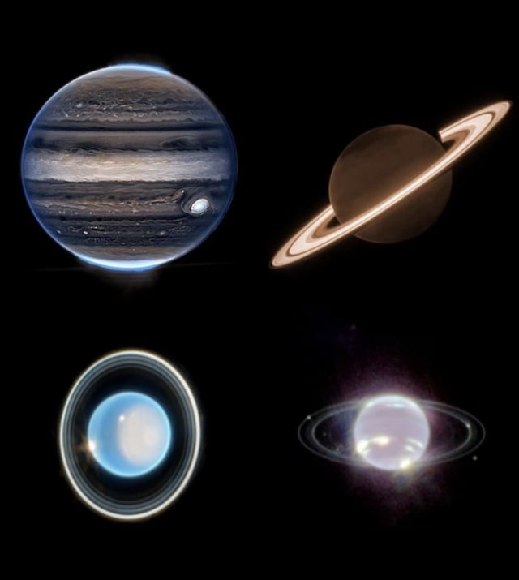
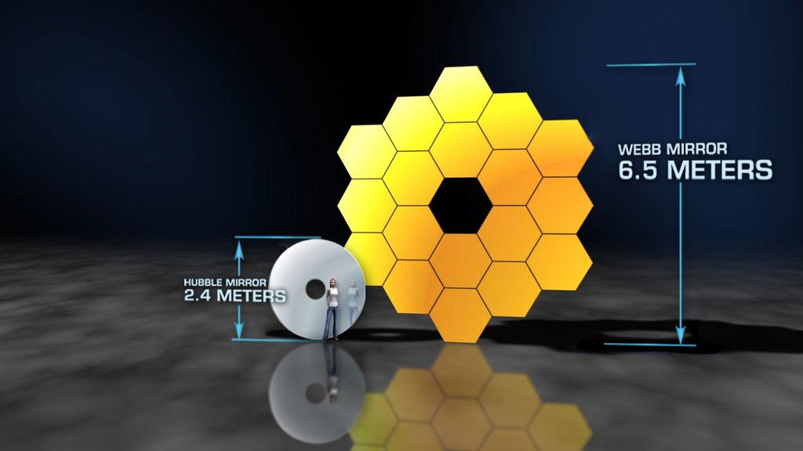
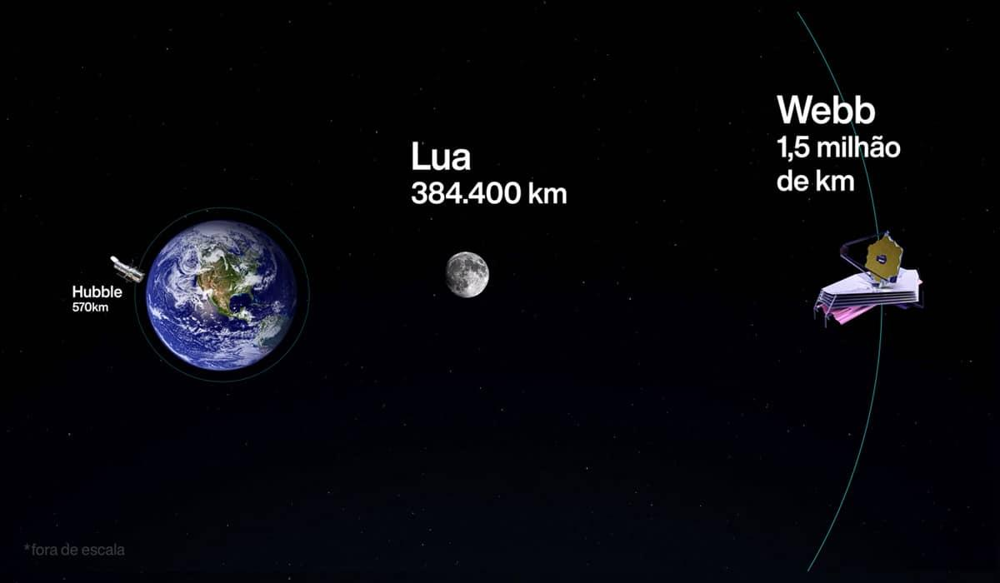
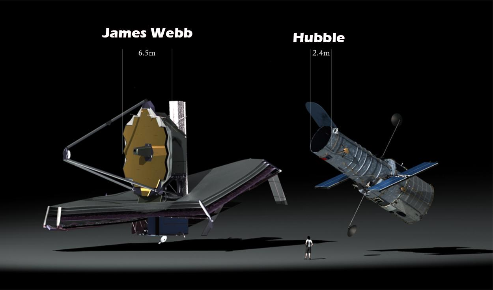

Tipo de Luz
Enquanto o Hubble enxerga essencialmente a luz visível (como nós), o Webb capta o infravermelho térmico, atravessando a poeira cósmica densa.

Eles não são concorrentes, mas sim complementares. Entenda as diferenças técnicas entre as duas maiores lendas da astronomia.
Enquanto o Hubble enxerga essencialmente a luz visível (como nós), o Webb capta o infravermelho térmico, atravessando a poeira cósmica densa.

O espelho primário do Hubble possui 2,4 metros. O Webb o supera com um imenso espelho segmentado banhado a ouro medindo 6,5 metros de diâmetro.

O Hubble orbita perto da Terra (a 547 km de altitude). O Webb viajou para uma posição distante e isolada no Ponto de Lagrange L2 (1,5 milhão de km).

Lançado em 1990, o Hubble carrega a tecnologia de sua época. O James Webb (2021) representa o ápice moderno da engenharia espacial e óptica.
